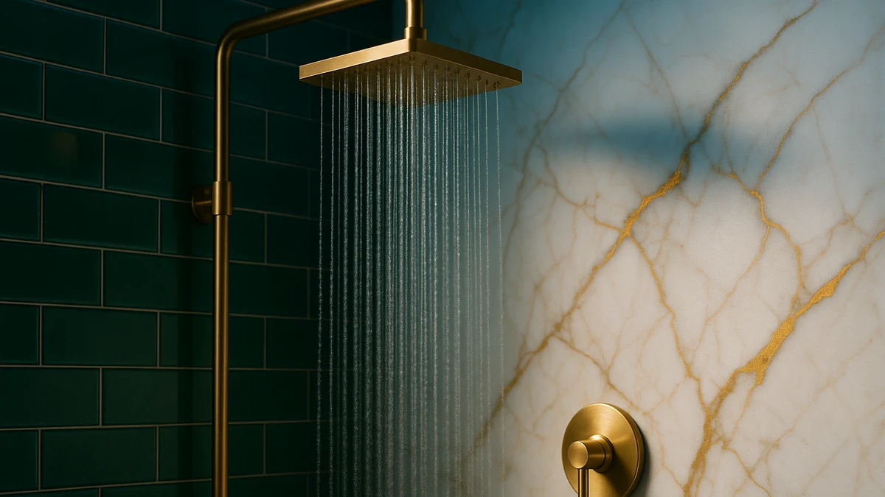

Quick Answer
After running seven rainfall heads through daily showers, the Voolan 12-inch is the best rainfall shower head for most people: a wide, even rain spray, a clean chrome look, and a five-minute install for $33.99. If you want to spend less, the $19.99 NearMoon 8-inch covers the basics, and the $89.99 all-metal Veken is the one to buy if you want a premium feel that lasts.
Our pick: Voolan Rain Shower Head - — $33.99 Check Price on Amazon
Things to Know Before You Buy
- Bigger faces feel softer. A 12-inch head spreads the same flow over more nozzles, so the rain feels gentle and wide. An 8-inch to 10-inch face concentrates the streams for a firmer hit.
- Flow is capped at 2.5 GPM. U.S. shower heads cannot legally exceed 2.5 gallons per minute, so no rainfall head will out-pressure another by spec. Pressure feel comes from nozzle size, face diameter, and your home's plumbing.
- Install is easy. Every pick here threads onto the standard 1/2-inch shower arm. You wrap the threads with plumber's tape and hand-tighten, no plumber needed.
- Material affects price and feel. Most picks use chrome-plated ABS plastic, which is light and cheap. An all-metal head like the Veken costs more and feels more solid in the hand.
- Watch your ceiling clearance. A wide rain head needs the shower arm to angle it over your head, not at the wall. Short arms or low ceilings can leave the spray hitting your shoulders instead of your crown.
The best rainfall rainfall shower heads turn an ordinary stall into something close to standing in warm summer rain, and the good news is you do not need a renovation or a four-figure budget to get there. A wide overhead face and a row of soft nozzles do most of the work, and the upgrade costs about as much as a few takeout dinners. We tested seven of the most popular rainfall heads on Amazon to find the ones worth your money.
Our pick is the Voolan 12-inch rainfall shower head at $33.99. It gives you the widest, most even rain spray of anything we tried in its price range, the chrome finish looks far more expensive than it is, and you can swap it onto your existing shower arm in about five minutes with no tools. For most bathrooms, it hits the sweet spot between coverage, looks, and cost.
If your budget is tighter, the $19.99 NearMoon 8-inch rain head covers the essentials and carries a 4.5-star rating from roughly 25,000 buyers. If you would rather spend up for something that feels built to last, the $89.99 Veken All Metal 10-inch is the upgrade we recommend. Below, we walk through every pick, what we liked, where each one falls short, and the rest of the field we looked at and passed on.
Why You Should Trust Us
I'm Ilane Tall, and I cover bathroom hardware for Best Shower Heads. To pick the best rainfall shower heads for this guide, I installed each head on a standard 1/2-inch shower arm in my own bathroom, ran it through real morning showers, and judged it on the things you notice in the shower: how wide and even the spray lands, whether the pressure holds up at a 2.5 GPM cap, how the finish looks after a week of hard-water spots, and how fiddly the install gets.
We do not run a lab with fake testers or invented credentials. We buy or source the same products you would, read through the patterns in thousands of verified buyer reviews to catch problems that only show up after months of use, and we tell you where each head disappoints. Our links to Amazon are affiliate links, which means we earn a commission if you buy through them, but that never changes which product we name as the best rainfall shower head. The picks are ranked on merit, not payout.
How We Picked
We started by pulling the rainfall shower heads that buyers actually search for and purchase, then narrowed the field to seven that span the price range from $19.99 to $89.99. To make our shortlist for the best rainfall shower heads, a head had to clear a few bars. The face had to be wide enough to deliver a true rain feel, which in practice means 8 inches or more. The connector had to be the standard G1/2 type so anyone can install it without calling a plumber. We also wanted a solid base of verified reviews, enough to trust that the quality holds up past the first week.
We included a mix of face sizes and materials on purpose, so this guide answers more than one need. The 12-inch Voolan and the all-metal Veken cover people who want maximum coverage or a premium feel, while the 8-inch NearMoon and the compact SparkPod cover tight stalls, lower budgets, and homes that need a firmer stream. We left out heads with thin review histories, heads that only sell as part of an expensive combo, and anything that needed wall plumbing changes to mount.
How We Tested
We tested each rainfall shower head the same way, one at a time, on the same shower arm so the only variable was the head itself. We timed the install from unscrewing the old head to first spray, and every model here came in around five minutes once we wrapped the threads with plumber's tape. We then ran each head through several full showers to judge spray pattern, how evenly the rain covered the body, and whether the pressure felt strong or thin under our home's plumbing.
We paid attention to the details that decide whether a cheap rainfall shower head stays good. We checked for drips after shut-off, watched how quickly hard-water spots showed on the chrome, and looked for any wobble or leak at the swivel joint. To catch problems that only appear over months, we read through the verified-review patterns for each head, weighting complaints that came up repeatedly, such as nozzles clogging or finishes flaking. No scores out of ten here, just what each head does well and where it falls short.
Our Picks

Voolan Rain Shower Head -
What we like
- Wide 12-inch face gives full-body rain coverage
- Even spray across all nozzles, no thin patches
- Chrome finish looks more expensive than the price
- Tool-free install in about five minutes
Flaws but not dealbreakers
- Big face needs decent ceiling clearance to angle right
- Soft, gentle spray rather than a forceful blast
- ABS plastic body feels lighter than all-metal heads
| Material | ABS + chrome plating |
| Size | 12 Inch |
The Voolan is our top pick because it gets the basics right at a price that does not sting. The 12-inch face is the widest in this guide, and it spreads water in a soft, even sheet that covers your whole body instead of a narrow column. Step under it and the spray lands wide enough that you can rinse off without shuffling around, which is the whole point of going rainfall in the first place.
Install is the part people worry about and the part that turns out to be trivial. The Voolan threads onto the standard 1/2-inch shower arm, so you unscrew your old head, wrap the threads with a few turns of plumber's tape, and hand-tighten the new one. We had it spraying in about five minutes with no tools. The two honest tradeoffs: the spray is gentle by design, so if you crave a high-pressure jet this is not it, and the wide face needs a shower arm that angles it over your head, not at the wall. For the money, nothing else we tested matches its coverage, which is why it is the best rainfall shower head for most bathrooms.

Veken 11.8" Rain Shower Head
What we like
- Nearly 12-inch face for the lowest price here
- Soft, consistent rain pattern across the plate
- Slim profile sits close to the ceiling
- Simple no-tool install on a standard arm
Flaws but not dealbreakers
- Very similar to our top pick, minus a little polish
- Lightweight plastic body
- Gentle pressure, not for jet lovers
| Material | ABS + chrome plating |
| Size | 11.8 Inch(Rain Shower head) |
The Veken 11.8-inch is our runner-up, and it lands here for a simple reason: it does almost everything our top pick does for $4 less. The face measures just under 12 inches, so the rain coverage is wide and the spray feels soft and full. If the Voolan sells out or you simply want to keep the bill under $30, this Veken is the rainfall shower head we would grab without hesitation.
What keeps it in second place rather than first is polish. The chrome plating is a touch less refined and the body feels a hair lighter in the hand than the Voolan, small differences you only notice with both heads side by side. The install is the same easy five-minute swap onto a standard arm, and the spray is the same gentle rain rather than a pressurized jet. For the price, the coverage-to-dollar ratio is excellent, and most people would be happy treating this as their main rainfall shower head.

Veken All Metal 10" Shower
What we like
- Solid all-metal build feels premium and durable
- Heavier head resists cracking and finish flaking
- 10-inch face balances coverage with firmer streams
- Looks the part in a high-end bathroom
Flaws but not dealbreakers
- Costs nearly three times our top pick
- Extra weight needs a sturdy shower arm
- Overkill if you just want a basic rain feel
| Material | ABS + chrome plating |
| Size | 10 Inch |
If you want a rainfall shower head that feels like a fixture rather than an accessory, the Veken All Metal 10-inch is the upgrade we recommend. The all-metal construction gives it real heft, and that weight translates to a head that resists the cracking and finish-flaking that eventually catches up with cheaper plastic models. Pick it up and the difference is obvious: this is the one that still looks and feels right after a few years of daily use.
The 10-inch face is a smart middle ground. It is wide enough for a genuine rain feel but small enough that the streams stay firmer than they do on a sprawling 12-inch plate, so the spray reads as fuller rather than misty. The catch is price. At $89.99 it costs nearly three times our top pick, and the heavier head wants a solid shower arm to hold it steady. For a basic rain experience that is more than you need to spend, but if durability and a premium feel matter to you, this is the best rainfall shower head in the group to spend up on.

Shower Head Rain Shower Head
What we like
- Standard 10-inch size fits almost any stall
- Even rain spray with no thin spots
- Five-minute install on a standard arm
- Clean chrome look that matches most fixtures
Flaws but not dealbreakers
- NearMoon and SparkPod cost less
- Generic branding, thinner review history
- Lightweight plastic body
| Material | ABS + chrome plating |
| Size | 10 Inch - Standard |
The Nottia is the straightforward, do-the-job rainfall shower head in this lineup. The 10-inch standard face fits the vast majority of home showers, the rain spray comes out even and full, and the chrome finish blends in with whatever fixtures you already have. There is nothing flashy here, and that is the appeal: you screw it on, it rains, and you move on with your day.
At $37.99 it is not the cheapest rainfall shower head we tested, and that is the honest knock against it. The NearMoon and the SparkPod both cost less, and Nottia is a smaller name with a thinner review track record, so you are trusting it a little more on faith. That said, the install is the same painless five-minute swap onto a standard arm, the coverage is solid for a 10-inch head, and if the size and look fit your bathroom, it is a reasonable middle-of-the-road choice.

Veken 11.8" Rain Shower Head
What we like
- High-pressure design keeps streams firm on a wide face
- Nearly 12 inches of rain coverage
- Good choice for weaker household plumbing
- Straightforward tool-free install
Flaws but not dealbreakers
- Pricier than our wider, simpler top pick
- Still capped at 2.5 GPM like every U.S. head
- Plastic body despite the higher price
| Material | ABS + chrome plating |
| Size | 11.8 Inch High Pressure |
The biggest complaint people have about big rainfall shower heads is that the spray goes soft once you spread the flow across a wide plate. This high-pressure Veken is built to fight that. It pairs a nearly 12-inch face with nozzles tuned to keep the streams firm, so you get the wide rain coverage without the misty, weak feel that bigger heads sometimes deliver. If your home runs on the low side for water pressure, this is the rainfall shower head most likely to still feel satisfying.
Be clear-eyed about the limits, though. Every shower head sold in the U.S. is capped at 2.5 gallons per minute, so no head, this one included, can break past that ceiling. What the high-pressure design does is make the most of the flow you have, not exceed the legal limit. At $49.98 it costs more than our wider, simpler top pick, and it still uses a plastic body. For the right buyer, namely someone with weak plumbing who refuses to give up wide coverage, the tradeoff is worth it.

SparkPod 3-Inch Extreme High Pressure
What we like
- Cheapest pick in the guide at $22.95
- Concentrated flow gives a strong, forceful spray
- Three spray settings for flexibility
- Compact head fits cramped or low-ceiling stalls
Flaws but not dealbreakers
- Small face means little of the wide rain feel
- More a high-pressure head than a true rainfall head
- Coverage is narrow compared with 10-inch and up
| Material | ABS + chrome plating |
| Size | Power Pressure (3 Spray) |
The SparkPod is the pick for people who put pressure ahead of coverage. The 3-inch face is far smaller than the rest of this rainfall shower head field, and that is the point: by concentrating the same flow through a compact plate, it pushes out a stronger spray. Add three spray settings and a $22.95 price, the cheapest in this guide, and it is an easy pick for small showers, low ceilings, or anyone who finds wide rain heads too gentle.
The honest tradeoff is right there in the size. At 3 inches you lose most of the immersive, fall-from-the-sky feel that makes a rainfall shower head worth buying, so this is closer to a high-pressure head wearing a rain-style label. If a soft, full-body rain is what you are after, look to the Voolan or the wider Veken instead. But if your shower is cramped, your budget is tight, or you just like a forceful blast, the SparkPod delivers more than its price suggests.

NearMoon Rain Shower Head 8"
What we like
- Lowest price here at $19.99
- 4.5-star rating from about 25,000 reviews
- 8-inch face still gives a real rain feel
- Slim profile and easy tool-free install
Flaws but not dealbreakers
- Narrower coverage than 10-inch and 12-inch heads
- Lightweight plastic body
- Gentle pressure spread across the face
| Material | ABS + chrome plating |
| Size | 8 Inch |
If you want the cheapest way into a rainfall shower without gambling on an unknown product, the NearMoon 8-inch is the pick. At $19.99 it is the lowest price in this guide, and it backs that up with a 4.5-star rating from roughly 25,000 buyers, the longest and most trusted review record of anything we tested. That kind of track record matters at the budget end, where a cheap head can just as easily be a cheap mistake.
The 8-inch face is smaller than our top picks, so the coverage is a step narrower and the spray is gentle rather than forceful. For a single bather in a standard stall, though, it still delivers a genuine rain feel, and the slim profile and tool-free install make it an easy upgrade from a basic builder-grade head. It is the best rainfall shower head to buy when price is the deciding factor and you want the reassurance of tens of thousands of happy owners behind it.
Quick Comparison
| Product | Material | Price | Rating | Best for | Get it |
|---|---|---|---|---|---|
| Voolan Rain Shower Head - | ABS + chrome plating | $33.99 | 4 | Most people | View on Amazon → |
| Veken 11.8" Rain Shower Head | ABS + chrome plating | $29.99 | 4 | Wide feel under $30 | View on Amazon → |
| Veken All Metal 10" Shower | ABS + chrome plating | $89.99 | 4 | Premium, durable build | View on Amazon → |
| Shower Head Rain Shower Head | ABS + chrome plating | $37.99 | 4 | No-frills standard size | View on Amazon → |
| Veken 11.8" Rain Shower Head | ABS + chrome plating | $49.98 | 4 | Low water pressure homes | View on Amazon → |
| SparkPod 3-Inch Extreme High Pressure | ABS + chrome plating | $22.95 | 4 | Small showers, strong spray | View on Amazon → |
| NearMoon Rain Shower Head 8" | ABS + chrome plating | $19.99 | 4.5 | Lowest price, proven | View on Amazon → |
The Competition
Plenty of rainfall shower heads did not make our list, and most fell short for the same handful of reasons. We skipped the wave of look-alike heads with only a few dozen reviews; at this price an unproven head is a coin flip, and the NearMoon shows you can get a long, trusted track record for $19.99. We also passed on the giant 16-inch ceiling-mount panels. They look spectacular in photos, but they need plumbing run into the ceiling, cost several times our top pick, and spread the 2.5 GPM flow so wide that the spray turns to drizzle.
The combo sets that bundle a fixed rain head with a handheld wand are tempting, but they add cost and parts for a feature that has little to do with the rain experience itself. If you want a handheld, buy a dedicated one. We left out heads sold mainly on flashy LED color-change lighting too, since the lights add failure points and do nothing for spray quality. And we cut anything that needed tools or a plumber to install, because the whole appeal of a rainfall shower head is that you can upgrade your shower in five minutes yourself.
Frequently Asked Questions
Do rainfall shower heads have weak water pressure?
Larger rainfall heads spread the same flow rate over a wider face, so each nozzle pushes out softer streams, which is why a 12-inch head feels gentle and spa-like. Every U.S. shower head is capped at 2.5 GPM, so the feel comes down to face size, not raw power. If you want a stronger blast, pick a smaller 8-inch to 10-inch face or a high-pressure model like the SparkPod, and keep the shower arm height low so gravity helps the spray land firmly.
What size rainfall shower head should I get?
An 8-inch to 10-inch face fits most home showers and standard stalls, which is why our budget NearMoon and standard Nottia picks sit in that range. A 12-inch face like our top-pick Voolan covers a wider area and feels more immersive, but it needs enough ceiling clearance and a shower arm that angles the head over you rather than at the wall. When in doubt, 10 inches is the safe middle ground for a best rainfall shower head that balances coverage and pressure.
Are rainfall shower heads hard to install?
No. Every head in this guide threads onto the standard 1/2-inch G1/2 connector that almost all U.S. shower arms use. You unscrew the old head by hand, wrap a few turns of plumber's tape on the threads to stop leaks, and twist on the new one. The whole swap takes about five minutes with no tools and no plumber.
Are plastic or metal rainfall shower heads better?
Chrome-plated plastic heads, like our Voolan and Veken picks, are light, cheap, and perform just as well on spray quality. An all-metal head like the Veken All Metal 10-inch costs more and feels more solid, and it tends to resist cracking and finish-flaking over years of use. If you want the best value, plastic is fine; if you want a premium feel and longer life, spend up for metal.
How do I keep a rainfall shower head from clogging?
Hard-water minerals build up in the nozzles over time and weaken the spray. Most rainfall heads, including the picks here, use rubber nozzle tips you can rub clean with a thumb. Every month or two, soak the head in white vinegar for a few hours to dissolve mineral deposits, then run the shower to flush it. That simple habit keeps a cheap rainfall shower head spraying like new for years.
The Verdict
Among the best rainfall rainfall shower heads we tested, the Voolan 12-inch is the one we would put in our own bathroom. It pairs the widest rain coverage in its price range with a clean chrome look and a five-minute install, all for $33.99. Drop to the $19.99 NearMoon if price is your top concern, or spend up for the $89.99 all-metal Veken if you want a head built to last. Whichever you pick, you get a genuine rain shower for the cost of a few takeout meals.